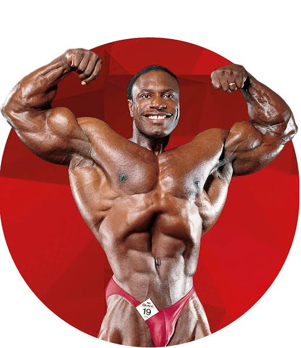

Arnold Schwarzenegger ile birlikte en çok Mr. Olympia kazanan (8 kez) efsane sporculardan biri olan Lee Haney, kütle ile estetiği mükemmel bir dengeyle buluşturmuştur. Geniş omuzları ve ince beliyle vücut geliştirme standartlarını yukarı taşıyan öncülerdendir.